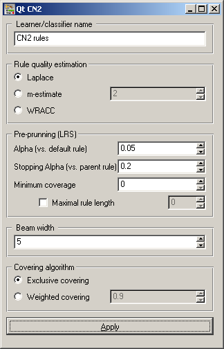
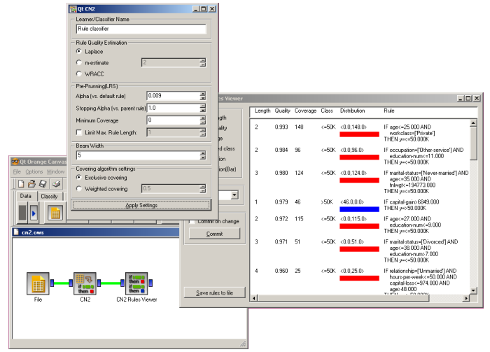

This is documentation for Orange 2.7. For the latest documentation, see Orange 3.
CN2 Rule Learner¶

CN2: A widget for learning an unordered set of classification if-then rules.
Signals¶
Inputs:
- Examples (ExampleTable)
Outputs:
Learner (orange.Learner)
- Classifier (orange.Classifier)
A rule classifier induced from given data.
- CN2UnorderedClassifier (orngCN2.CN2UnorderedClassifier)
The same as “Classifier”.
Description¶
Use this widget to learn a set of if-then rules from data. The algorithm is based on CN2 algorithm, however the variety of options in widget allows user to implement different kinds of cover-and-remove rule learning algorithms.
In the first box user can select between three evaluation functions. The first, Laplace, was originally used in CN2 algorithm. The second function is m-estimate of probability (used in later versions of CN2) and the last is WRACC (weighted relative accuracy), used in CN2-SD algorithm.
In the second box the user can define pre-prunning of rules. The first parameter, Alpha (vs. default rule), is a parameter of LRS (likelihood ratio statistics). Alpha determines required significance of a rule when compared to the default rule. The second parameter, Stopping Alpha (vs. parent rule), is also the parameter of LRS, only that in this case the rule is compared to its parent rule: it verifies whether the last specialization of the rule is significant enough. The third parameter, Minimum coverage specifies the minimal number of examples that each induced rule must cover. The last parameter, Maximal rule length limits the length of induced rules.
Beam width is the number of best rules that are, in each step, further specialized. Other rules are discarded.
Covering and removing examples can be done in two different ways. Exclusive covering, as in the original CN2, removes all covered examples and continues learning on remaining examples. Alternative type of covering is weighted covering, which only decreases weight of covered examples instead of removing them. The parameter of weighted covering is the multiplier; the weights of all covered examples are multiplied by this number.
Any changes of arguments must be confirmed by pushing Apply before they are propagated through the schema.
Examples¶
The figure shows a simple use of the widget. Rules are learned with CN2 widget and the classifier is sent to the Rule Viewer.
